Caso práctico: Active Directory con red NAT y red interna#
En este caso práctico vamos a montar el dominio empresa_tunombre.local con un controlador de dominio (SRVtunombre), tres clientes Windows 11 y un cliente Ubuntu. Antes de empezar repasa la teoría de Active Directory Domain Services (AD DS). Puedes apoyarte en los vídeos [6].
Máquinas virtuales#
Crea los siguientes clones enlazados:
Clon enlazado 1 de Windows Server 2022 llamado SRVtunombre (controlador de dominio) con dos tarjetas de red:
Tarjeta de red en modo "Red NAT" [1]: 10.0.2.10/24, puerta de enlace 10.0.2.1. Es la que da salida a internet. Para el Escritorio remoto reenvía el puerto 33389 del anfitrión (127.0.0.1:33389) al puerto 3389 del servidor (10.0.2.10:3389).
Tarjeta de red en modo "Red interna": 172.16.0.10/16.
Clon enlazado 2 de Windows 11 llamado WC05tunombre con una tarjeta de red en modo "Red interna": 172.16.0.15/16, puerta de enlace 172.16.0.10 y DNS 172.16.0.10.
Clon enlazado 3 de Windows 11 llamado WC06tunombre con una tarjeta de red en modo "Red interna": 172.16.0.16/16, puerta de enlace 172.16.0.10 y DNS 172.16.0.10.
Clon enlazado 4 de Windows 11 llamado WC07tunombre con una tarjeta de red en modo "Red interna": 172.16.0.17/16, puerta de enlace 172.16.0.10 y DNS 172.16.0.10.
Clon enlazado 5 de MV Ubuntu 26.04 llamado ubuntu01 con una tarjeta de red en modo "Red interna": 172.16.0.20/16, puerta de enlace 172.16.0.10 y DNS 172.16.0.10.
Fíjate en que la puerta de enlace y el DNS de los clientes son el propio servidor: los clientes están en una red interna sin salida directa, y será el servidor quien les dé acceso al exterior haciendo de router (NAT), además de ser su controlador de dominio y su DNS.
El servidor debe tener IP fija en las dos tarjetas: va a ser el controlador de dominio, el DNS y la puerta de enlace de la red interna, y los clientes lo tienen que localizar siempre en la misma dirección.
En el servidor, en Panel de control/Redes e Internet/Conexiones de red (ncpa.cpl), cambia el nombre de las dos tarjetas a RedNAT y RedInterna: así sabrás en todo momento cuál es cada una cuando el asistente de enrutamiento te pida elegir.
Escritorio remoto#
Con la red NAT no podemos llegar desde el anfitrión al servidor directamente, así que reenviamos un puerto del anfitrión al Escritorio remoto (RDP, puerto 3389/TCP) del servidor. En Herramientas/Red/Redes NAT/Reenvío de puertos de VirtualBox añade la regla:
Nombre |
Protocolo |
IP anfitrión |
Puerto anfitrión |
IP invitado |
Puerto invitado |
|---|---|---|---|---|---|
RDP |
TCP |
127.0.0.1 |
33389 |
10.0.2.10 |
3389 |
En el servidor activa el Escritorio remoto en Configuración/Sistema/Escritorio remoto o con sconfig (opción 7). Al activarlo se abre también la regla del firewall. Con PowerShell:
Set-ItemProperty 'HKLM:\System\CurrentControlSet\Control\Terminal Server' -Name fDenyTSConnections -Value 0
Enable-NetFirewallRule -DisplayGroup "Escritorio remoto" # "Remote Desktop" si el sistema está en inglés
Para conectarte desde el anfitrión:
Desde Windows:
mstsc(Conexión a Escritorio remoto), conectando a127.0.0.1:33389.Desde GNU/Linux: Remmina o
xfreerdp /v:127.0.0.1:33389 /u:Administrador.
Configurar servicio de enrutamiento#
Para que los clientes de la red interna tengan internet, el servidor tiene que hacer de router. Para configurar el servicio de enrutamiento vamos a:
Panel / Agregar roles y características
Seleccionamos nuestro servidor SRVtunombre
En Roles de servidor marcamos la casilla de:
[x] Remote Access / Acceso remoto
En servicios de rol seleccionamos:
[x] DirectAccess and VPN(RAS)
[x] Routing
Para configurar el servicio de enrutamiento vamos a Panel/Herramientas/Enrutamiento y Acceso remoto, seleccionamos nuestro servidor SRVtunombre, pulsamos con el botón derecho del ratón y configuramos y habilitamos el enrutamiento y acceso remoto seleccionando:
[x] Traducción de direcciones de red (NAT)
Como interfaz pública seleccionamos la tarjeta RedNAT (10.0.2.10): es la que da salida a internet.
Cuando el asistente pregunte por los servicios de nombres y direcciones (DNS/DHCP), elegimos configurarlos más adelante.
Instalación y configuración de Active Directory y DNS#
En SRVtunombre vamos a Administrador del servidor/Panel/Agregar roles y características/Instalación basada en características o en roles, seleccionamos un servidor del grupo de servidores, escogemos SRVtunombre y marcamos la casilla Servicios de dominio de Active Directory.
Creación de un dominio#
Partiendo de la ventana Resultados de la instalación de Active Directory, pulsa en Promover este servidor a controlador de dominio. (Si se había cerrado la ventana anterior es posible acceder a ella pulsando en el icono de advertencia de la barra de herramientas del Administrador del servidor.)
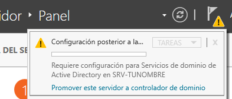
De momento, el servidor SRVtunombre no pertenece a ningún dominio. Tampoco existe un bosque al que agregar un nuevo dominio. Por lo tanto, el primer paso para formar el dominio empresa_tunombre.local es crear un nuevo bosque: selecciona la opción Agregar un nuevo bosque, escribe el nombre del dominio empresa_tunombre.local y pulsa Siguiente.
En capacidades del controlador del dominio, el Servidor de Sistema de nombres de dominio (DNS) y el Catálogo global (GC) deben estar marcados. Como contraseña de restauración de servicios de directorio (DSRM) [2] pon @lumn0DSRM.
Verifica el nombre NetBIOS [3] EMPRESA_TUNOMBRE y pulsa Siguiente.
Si todo ha sido configurado correctamente, haz clic en Instalar. El servidor se reiniciará.
Cuando se reinicie, comprueba que el DNS de las dos tarjetas del servidor es él mismo (127.0.0.1): ahora el servidor es el DNS del dominio.
Por último, habilita las actualizaciones dinámicas para que los clientes puedan registrar automáticamente sus nombres en el DNS: en Inicio/Herramientas administrativas/DNS, expande SRVTUNOMBRE/Zonas de búsqueda directa, haz clic con el botón derecho del ratón en empresa_tunombre.local/Propiedades/General y en la lista Actualizaciones dinámicas elige Sin seguridad y con seguridad. A continuación haz clic en Aceptar.
Unidades organizativas#
La estructura lógica de Windows Server se basa en la utilización de dominios y unidades organizativas. En un dominio se puede crear una jerarquía de unidades organizativas, las cuales pueden contener usuarios, grupos, equipos, impresoras y carpetas compartidas, además de otras unidades organizativas.
Para crear las unidades organizativas, en Inicio/Herramientas administrativas/Usuarios y equipos de Active Directory, dentro del dominio empresa_tunombre.local haz clic con el botón derecho del ratón -> Nuevo -> Unidad Organizativa, y crea la siguiente estructura:
OU=Oficinas
OU=Madrid
OU=Ventas
OU=Marketing
OU=Administración
OU=Barcelona
OU=Ventas
OU=Marketing
OU=Administración
OU=Departamentos
OU=Recursos Humanos
OU=Finanzas
OU=IT
OU=Usuarios
OU=Empleados
OU=Contratistas
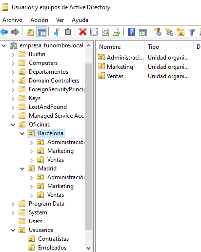
La OU Oficinas se utiliza para agrupar las unidades organizativas por ubicación geográfica.
Las OU Madrid y Barcelona se utilizan para agrupar los departamentos dentro de cada oficina.
La OU Departamentos se utiliza para agrupar las unidades organizativas por función.
La OU Usuarios se utiliza para agrupar las cuentas de usuario.
Ayuda: en el caso de querer borrar una OU que está protegida contra el borrado accidental, en propiedades, en la pestaña Objeto, desmarca dicha protección. En el caso de no ver esta pestaña, haz clic en Ver en la barra de menú y selecciona Características avanzadas.
Usuarios y grupos#
Crea el grupo de seguridad de ámbito global (ver Grupos del dominio) Empleados dentro de la UO Empleados y el grupo Contratistas dentro de la UO Contratistas.
Dentro de cada unidad organizativa crea los siguientes usuarios. Para todos ellos:
Nombre de inicio de sesión del usuario: el nombre del usuario seguido de @empresa_tunombre.local, por ejemplo E01_tunombre@empresa_tunombre.local.
Contraseña: @lumn0 seguido del código del usuario, por ejemplo @lumn0E01.
La contraseña nunca expira.
Los usuarios son:
UO Empleados
E01_tunombre perteneciente al grupo Empleados
E02_tunombre perteneciente al grupo Empleados
UO Contratistas
C01_tunombre perteneciente al grupo Contratistas
C02_tunombre perteneciente al grupo Contratistas
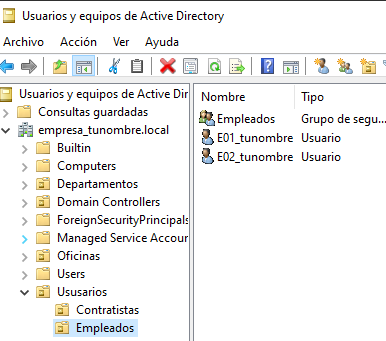
Unir los equipos al dominio#
Vamos a unir WC05tunombre, WC06tunombre y WC07tunombre al dominio empresa_tunombre.local. En cada uno de ellos:
Cambiamos el nombre de la máquina (WC05tunombre, WC06tunombre o WC07tunombre).
Comprobamos que el servidor DNS es la IP de SRVtunombre en la red interna (172.16.0.10): es el requisito imprescindible, porque el cliente localiza el controlador de dominio preguntando a ese DNS. Puedes comprobarlo con
ping empresa_tunombre.local.Haz clic derecho en el botón "Inicio" y selecciona "Sistema > Información" en el menú desplegable.
En la ventana de "Sistema", haz clic en "Configuración avanzada del sistema" en el panel izquierdo.
Se abrirá la ventana de "Propiedades del sistema". Haz clic en la pestaña "Nombre de equipo" y luego en el botón "Cambiar".
En la siguiente ventana, verás la opción "Miembro de". Asegúrate de seleccionar la opción "Dominio" en lugar de "Grupo de trabajo".
Escribe el nombre del dominio empresa_tunombre.local.
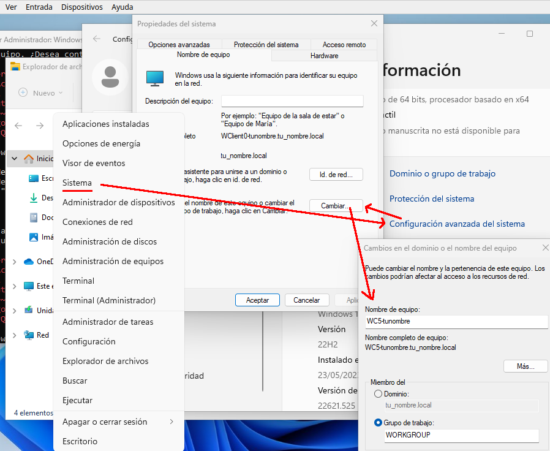
Al aceptar te pedirá las credenciales de un usuario del dominio con permisos para unir equipos (por ejemplo Administrador).
Haz clic en "OK" para guardar los cambios. Es posible que se te solicite reiniciar el equipo para aplicar los nuevos ajustes.
Para comprobarlo, en la pantalla de inicio de sesión elige "Otro usuario" y entra con una cuenta del dominio, por ejemplo E01_tunombre@empresa_tunombre.local. En el servidor, los equipos aparecerán en el contenedor Computers de Usuarios y equipos de Active Directory.
Sacar un equipo del dominio y cambiarle el nombre#
Vamos a ver qué ocurre en el dominio cuando sacamos un equipo, le cambiamos el nombre y lo volvemos a meter. Lo haremos con WC06tunombre, que pasará a llamarse WC08tunombre:
Entra en WC06tunombre con una cuenta de administrador local: cuando el equipo salga del dominio, las cuentas del dominio dejarán de funcionar en él.
En Propiedades del sistema/Nombre de equipo/Cambiar, en "Miembro de" selecciona Grupo de trabajo y escribe WORKGROUP. Te pedirá las credenciales de un usuario del dominio (por ejemplo Administrador). Reinicia el equipo.
En el servidor, en Usuarios y equipos de Active Directory, mira el contenedor Computers. ¿Sigue estando WC06TUNOMBRE? ¿Qué ha cambiado en su icono?
En el cliente, cambia el nombre del equipo a WC08tunombre y reinicia.
Vuelve a unirlo al dominio empresa_tunombre.local como en el apartado anterior y reinicia.
En el servidor, comprueba que aparece WC08TUNOMBRE en el contenedor Computers y, en el DNS, en la zona empresa_tunombre.local, su registro con la IP 172.16.0.16.
Responde a las siguientes preguntas:
¿Qué ha pasado con la cuenta de WC06TUNOMBRE al sacar el equipo del dominio? ¿Se ha borrado?
Cuando el equipo ha vuelto al dominio con otro nombre, ¿ha reutilizado la cuenta antigua o se ha creado una nueva?
¿Qué tendrías que hacer para que en el dominio no queden cuentas de equipos que ya no existen?
Cuando termines, borra la cuenta WC06TUNOMBRE del contenedor Computers y su registro del DNS si sigue apareciendo: quitar un equipo del dominio no borra su cuenta en el servidor.
Directivas de contraseñas#
Vamos a crear una directiva de contraseña específica (PSO, Password Settings Object) sobre los grupos Empleados y Contratistas; este tipo de directivas tiene prioridad sobre la directiva de contraseñas general del dominio. Para ello abre el Centro de administración de Active Directory y selecciona empresa_tunombre (local)/System/Password Settings Container
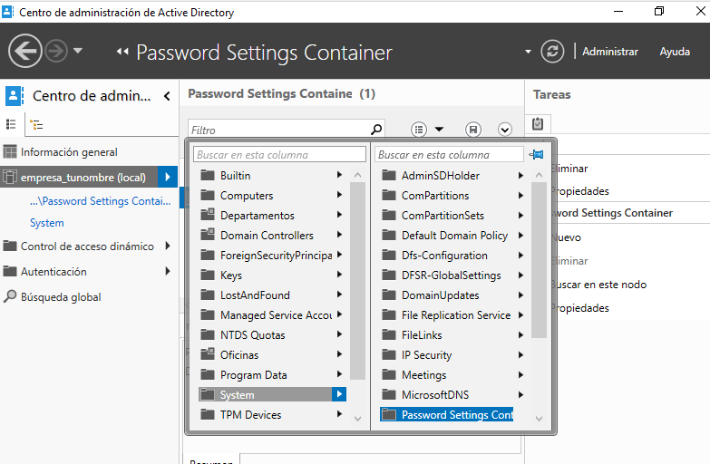
Nuevo/Configuración de contraseña
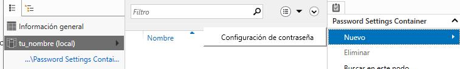
Los campos que nos pide la configuración de contraseña son:
Nombre: Es el nombre que le asignas a la política de contraseña para identificarla fácilmente. Puedes darle un nombre descriptivo que refleje los requisitos o el propósito de la política.
Precedencia: La precedencia se refiere al orden en el que se aplican las políticas de contraseña cuando existen múltiples políticas configuradas. Este campo te permite establecer la prioridad o el nivel de precedencia de la política de contraseña en relación con otras políticas. La política con la precedencia más alta tiene prioridad.
Longitud mínima: Especifica la longitud mínima que deben tener las contraseñas para cumplir con la política. Puedes establecer un valor numérico para indicar el número mínimo de caracteres requeridos.
Complejidad de la contraseña: Este campo te permite configurar si las contraseñas deben cumplir con requisitos de complejidad. Puedes habilitar o deshabilitar la complejidad y definir qué elementos se requieren, como letras mayúsculas, letras minúsculas, números y caracteres especiales.
Duración máxima de la contraseña: Aquí puedes especificar el tiempo máximo que una contraseña puede estar en uso antes de que los usuarios deban cambiarla. Puedes establecer una cantidad de días después de los cuales se requiere un cambio de contraseña.
Historial de contraseñas: Este campo define el número de contraseñas anteriores que los usuarios no pueden reutilizar. Por ejemplo, si estableces un historial de contraseñas de 5, los usuarios no podrán usar ninguna de las últimas 5 contraseñas que hayan utilizado.
Bloqueo de cuenta por intentos fallidos: Puedes configurar el número máximo de intentos fallidos de inicio de sesión permitidos antes de que una cuenta de usuario se bloquee temporalmente. Esto ayuda a proteger las cuentas contra ataques de fuerza bruta.
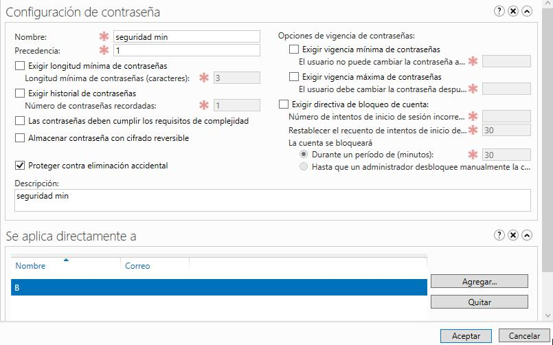
Instalar programas y cambiar el fondo de escritorio por GPO#
Vamos a establecer un fondo de pantalla a través de una GPO y a instalar VideoLAN en los ordenadores que se encuentran en la UO Oficinas/Barcelona/Administración. En Usuarios y equipos de Active Directory, mueve WC05tunombre y WC07tunombre desde el contenedor Computers a esa UO (botón derecho del ratón -> Mover). Esta directiva no se aplicará sobre WC08tunombre (el antiguo WC06tunombre), ya que se queda en el contenedor "Computers".
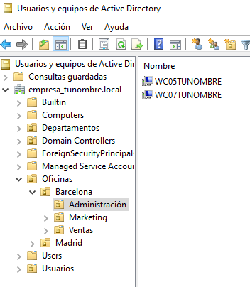
En Inicio/Herramientas administrativas de Windows/Administración de directivas de grupo creamos una GPO llamada FondoPantalla y otra que se llame Instalar VLC.
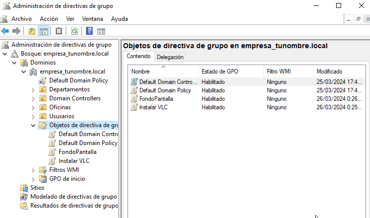
La instalación de software por directivas de grupo solo admite paquetes .msi [4], así que descargamos VideoLAN en formato MSI. Lo guardamos, junto con la imagen del fondo de pantalla, en la carpeta C:\Windows\SYSVOL [5]: esta carpeta se comparte de forma predeterminada en los controladores de dominio, lo que permite a los clientes y a otros controladores de dominio acceder a los archivos de políticas de grupo y scripts de inicio y cierre.
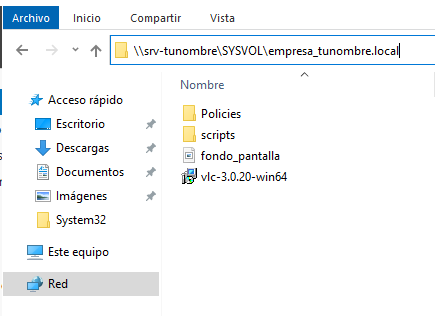
En el Objeto de directiva de grupo (GPO) Instalar VLC, en la pestaña de Configuración/Configuración del equipo vamos a Edición, en Directivas Instalar VLC/Configuración del equipo/Directivas/Configuración de software/Instalación de software/ creamos un nuevo paquete y especificamos la ubicación del paquete .msi con su ruta de red (\\SRVtunombre\SYSVOL\...), nunca con la ruta local C:\...: son los clientes los que tienen que poder descargarlo. Seleccionamos el método de implementación asignada: como la hemos puesto en Configuración del equipo, se instala automáticamente cuando el equipo arranca. (La instalación publicada solo está disponible en Configuración de usuario: el usuario puede elegir instalarla desde el Panel de control.)
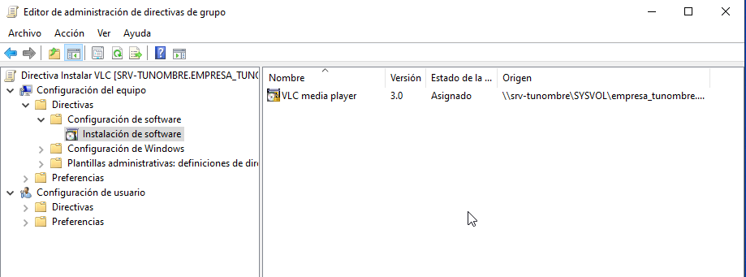
Para cambiar el fondo de pantalla, editamos la directiva FondoPantalla y en Configuración de usuario/Directivas/Plantillas administrativas/Escritorio/Active Desktop/Tapiz del escritorio la habilitamos, indicando como nombre del tapiz la ruta de red de la imagen (una carpeta compartida a la que los usuarios tengan acceso de lectura).
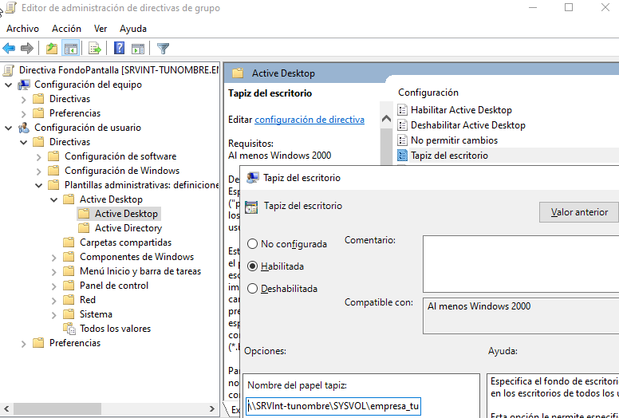
Por último vamos a Administración de directivas de grupo/, buscamos Oficinas/Barcelona/Administración y vinculamos las dos GPO existentes (botón derecho del ratón -> Vincular un GPO existente).
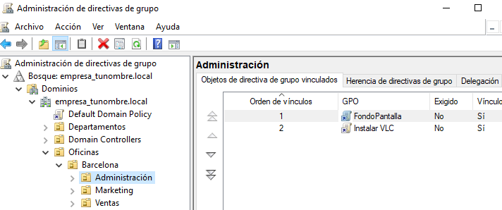
Los cambios en las directivas de grupo pueden requerir que el cliente se reinicie para que tengan efecto. Si queremos aplicarlas nosotros mismos en los clientes, abre una ventana del símbolo del sistema (cmd) o PowerShell y ejecuta gpupdate /force: esto obligará al equipo a buscar y aplicar las nuevas directivas de grupo. Con gpresult /r puedes ver qué directivas se han aplicado.
Configuración de carpetas compartidas#
Al compartir una carpeta intervienen dos juegos de permisos (ver Permisos NTFS y carpetas compartidas): los permisos del recurso compartido, que solo son tres (Control total, Cambiar y Leer) y solo se aplican al acceder por red, y los permisos NTFS de la carpeta. Cuando un usuario accede por red se aplica el más restrictivo de los dos.
Para compartir una carpeta, con el botón derecho del ratón accedemos a sus propiedades, vamos a la pestaña de Compartir y, en Uso compartido avanzado, seleccionamos Compartir esta carpeta. En Permisos damos los permisos del recurso compartido y en la pestaña Seguridad los permisos NTFS.
Crea las siguientes carpetas compartidas con los siguientes permisos:
C:\compartida\empleados\E01_tunombre (E01_tunombre tiene permisos de lectura y escritura)
C:\compartida\empleados\E02_tunombre (E02_tunombre tiene permisos de lectura y escritura)
C:\compartida\empleados\empleados_compartida (el grupo Empleados tiene permiso de lectura)
C:\compartida\contratista\C01_tunombre (C01_tunombre tiene permisos de lectura y escritura)
C:\compartida\contratista\C02_tunombre (C02_tunombre tiene permisos de lectura y escritura)
C:\compartida\contratista\contratista_compartida (el grupo Contratistas tiene permiso de lectura)
Cada carpeta queda compartida en \\SRVtunombre\nombre_del_recurso, por ejemplo \\SRVtunombre\empleados_compartida.
Mapear unidades de red a las carpetas compartidas#
Queremos que se monte de forma automática la carpeta contratista_compartida en la unidad G: con la etiqueta contratos a los usuarios que están dentro de la OU Contratistas, y la carpeta empleados_compartida en F: con la etiqueta comunicados a los usuarios que están dentro de la OU Empleados.
En Inicio/Herramientas administrativas de Windows / Administración de directivas de grupo creamos una GPO directamente en "Usuarios / Empleados" llamada "Mapeo de unidades de empleados"
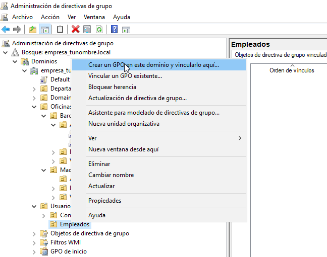
Con el botón derecho del ratón abrimos el "Editor de administración de directivas de grupo / Configuración de usuario / Preferencias / Asignaciones de unidades -> nuevo / unidad asignada"
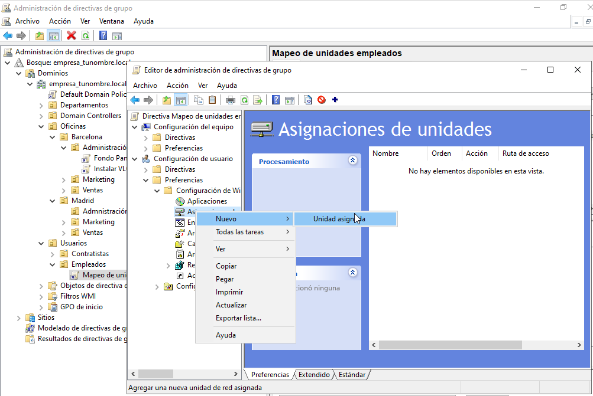
Seleccionamos la Acción de Crear:
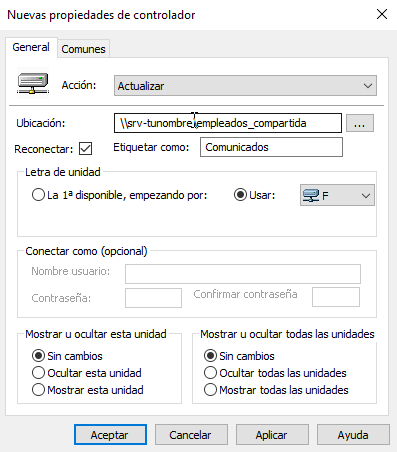
Haz lo mismo para los contratistas con una GPO en "Usuarios / Contratistas". En el cliente tenemos que:
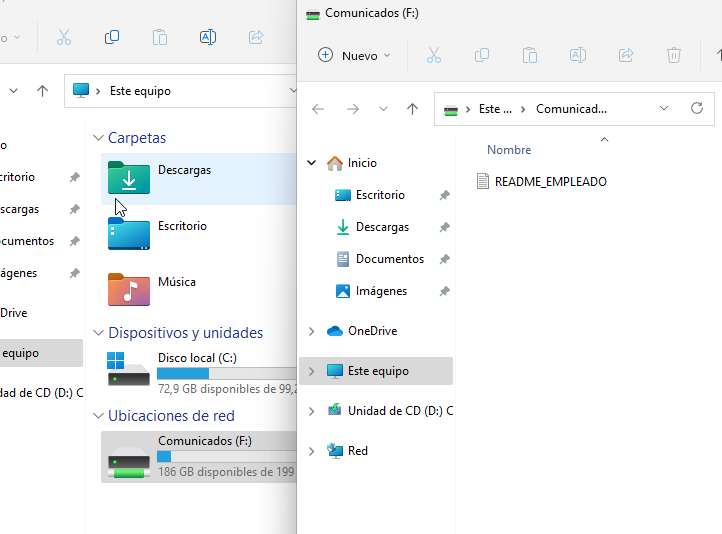
En el caso de que tengamos problemas, gpupdate /force fuerza una actualización de las políticas de grupo en el cliente.
Script al inicio de la sesión#
Vamos a hacer el mapeo de unidades en red con el siguiente script llamado montar.bat guardado en C:\Windows\SYSVOL\sysvol\empresa_tunombre.local\scripts
net use h: \\SRVtunombre\contratista_compartida
net use i: \\SRVtunombre\empleados_compartida
Vamos a los usuarios en los que queremos que se monten las unidades, Usuarios y equipos del AD / Usuarios / Empleados / E02_tunombre / propiedades y en la pestaña de perfil lo metemos en el Script de inicio de sesión
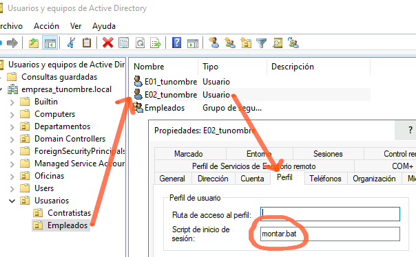
Perfil móvil#
Un perfil móvil se guarda en una carpeta compartida del servidor, de modo que el usuario tiene el mismo escritorio, documentos y configuración inicie sesión desde el equipo que inicie (ver Tipos de perfiles de usuario).
Vamos a crear un perfil móvil a los contratistas, para ello primero creamos una carpeta compartida llamada Perfiles con acceso de escritura y lectura para todos los usuarios.
En Usuarios y equipos de Active Directory, en la ventana de propiedades de la cuenta, hacemos clic sobre la solapa Perfil. En ella, debemos dar valor al cuadro de texto Ruta de acceso al perfil. El contenido seguirá el siguiente formato: \\SRVtunombre\Perfiles\C01_tunombre; de forma más general podríamos cambiar C01_tunombre por %username%
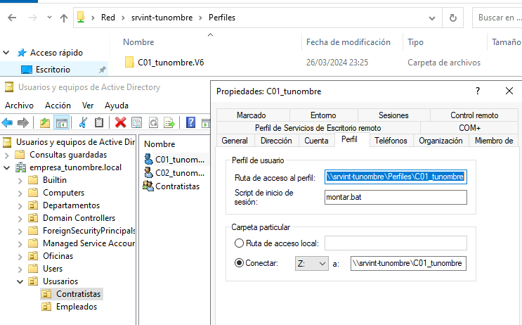
Cuando se cierra la sesión, el perfil se actualizará en el servidor:
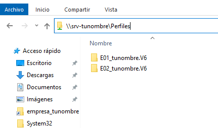
Aplicar cuota#
Vamos a limitar el espacio que puede ocupar cada perfil móvil en el servidor. Lo primero es agregar los roles y características necesarias: en Administrador del servidor / Agregar roles y características, en la lista de roles, dentro de Servidor de archivos y almacenamiento / Servicios de archivos y de iSCSI / Administrador de recursos del servidor de archivos
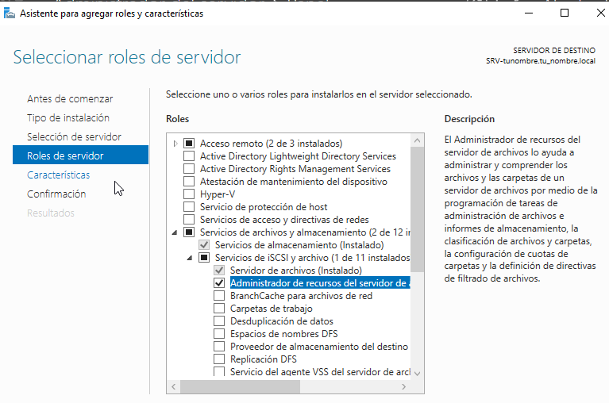
Para activar las cuotas vamos a:
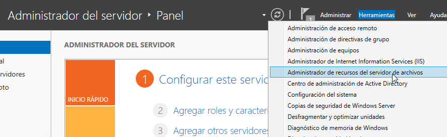
Creamos una nueva plantilla llamada Límite 10MB tunombre, con Advertencia al 20 y 50%
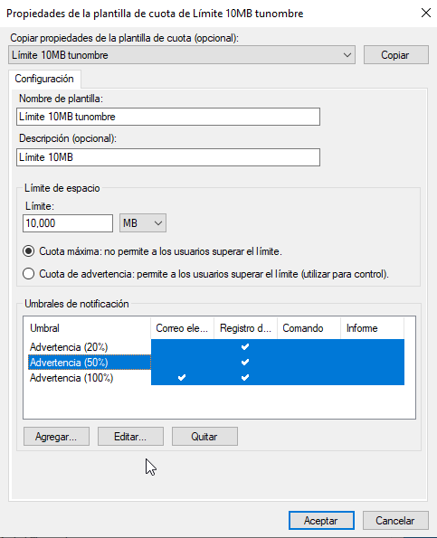
Aplica la plantilla creada en la carpeta compartida en la que se encuentran los perfiles móviles; cuando lo apliques no olvides marcar Aplica la plantilla aut. y crear cuotas en subcarpetas nuevas y existentes.
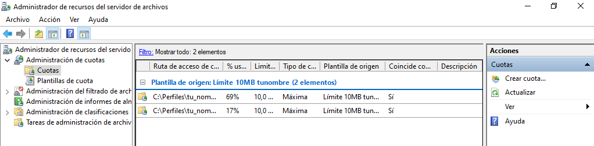
Inicia la sesión con algún usuario, copia algún archivo para que exceda la cuota, cuando cierres la sesión te dará un error en la sincronización del perfil, vuelve a iniciar sesión con el usuario y abre el visor de eventos:
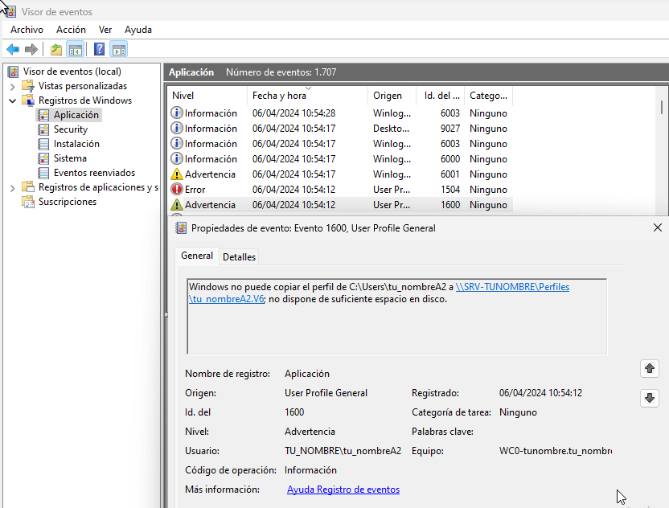
Perfil obligatorio#
Un perfil obligatorio es un perfil móvil de solo lectura: se carga desde el servidor, pero los cambios realizados por el usuario durante la sesión no se guardan entre sesiones.
Personalizamos en el cliente el perfil móvil que hemos creado; este se guardará en el servidor en C:\Perfiles\C01_tunombre.v6
Desde propiedades de la carpeta del perfil vamos a Seguridad / Opciones avanzadas y cambiamos el propietario a Administrador, marcamos la opción de reemplazar en todas las subcarpetas
Copiamos la carpeta C01_tunombre.v6 a plantilla.v6 y la compartimos para todos solo con permisos de lectura
Hacemos que los usuarios deseados tengan esta carpeta como su perfil: \\SRVtunombre\Perfiles\plantilla (la ruta se escribe sin el sufijo .v6, Windows lo añade solo)
Entramos en la carpeta plantilla.v6, activamos los elementos ocultos, y si en AppData hay carpetas llamadas Local o LocalLow las eliminamos (esas carpetas no se sincronizan con el servidor; Roaming, en cambio, hay que conservarla).
Abrimos el registro (regedit) y seleccionamos HKEY_USERS; en Archivo / Cargar subárbol elegimos el archivo NTUSER.DAT de plantilla.v6, le ponemos un nombre a la clave (por ejemplo, perfilobligatorio) y en sus permisos damos Control total con herencia a los usuarios que van a usar el perfil (por ejemplo, al grupo Contratistas). Finalmente, en Archivo, descargamos el subárbol.
En plantilla.v6 renombramos NTUSER.DAT a NTUSER.MAN.
Unir un cliente Ubuntu al dominio#
Un cliente GNU/Linux también puede formar parte del dominio y validar a sus usuarios contra Active Directory. Para ello utilizaremos realmd (une la máquina al dominio), SSSD (consulta los usuarios y grupos del dominio) y Kerberos (autenticación).
Comprueba que ubuntu01 tiene la IP 172.16.0.20/16 con puerta de enlace y DNS 172.16.0.10 (en Configuración/Red).
Añade el servidor en
/etc/hosts:172.16.0.10 srvtunombre.empresa_tunombre.local srvtunombre
Sincroniza la hora de los dos ordenadores: Kerberos rechaza la autenticación si los relojes difieren más de unos minutos.
Instala los paquetes necesarios:
apt install sssd-ad sssd-tools realmd adcli
apt install krb5-user
#Reino predeterminado de la versión 5 de Kerberos:
Reino de Kerberos: EMPRESA_TUNOMBRE.LOCAL
Servidores : srvtunombre.empresa_tunombre.local
Servidor administrativo: srvtunombre.empresa_tunombre.local
Deshabilitamos la resolución inversa de DNS (rdns = false) en /etc/krb5.conf:
head -3 /etc/krb5.conf
[libdefaults]
default_realm = EMPRESA_TUNOMBRE.LOCAL
rdns = false
Añadimos nuestro Ubuntu al dominio:
sudo realm join --user=Administrador -v empresa_tunombre.local
realm list # comprobamos que estamos en el dominio
Para que se cree el home de forma automática cuando el usuario inicia sesión (marcar la opción Create home directory on login):
pam-auth-update
En el servidor, el equipo UBUNTU01 aparecerá en el contenedor Computers de Usuarios y equipos de Active Directory:
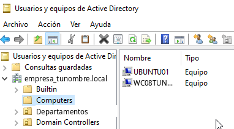
Para entrar con un usuario del dominio, en la pantalla de inicio selecciona "¿No está en la lista?" y escribe el usuario con el dominio, por ejemplo E01_tunombre@empresa_tunombre.local:

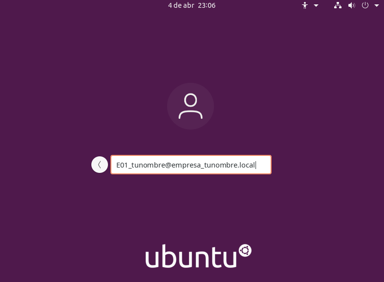
También puedes conectarte por ssh desde otra máquina de la red interna (ssh 'e01_tunombre@empresa_tunombre.local'@172.16.0.20):

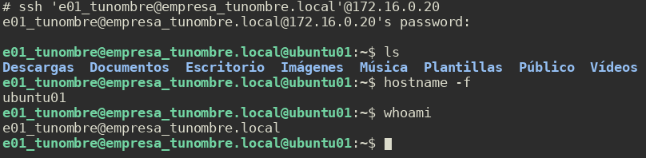
Ayuda: usa kinit Administrador@EMPRESA_TUNOMBRE.LOCAL para comprobar que Kerberos funciona y id E01_tunombre@empresa_tunombre.local para comprobar que el cliente ve los usuarios del dominio. Puedes verificar la configuración DNS en /etc/resolv.conf.
Notas